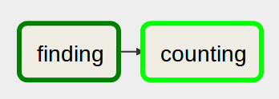
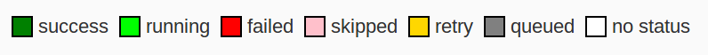
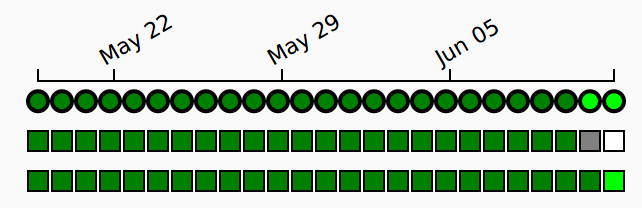

Airflow DAG is running on a daily basis. Each DAG consists of two taks:
- identifying the web crawler IPs;
- filtering the detected web crawler IPs and calculate the statistics of user activities.

Below shows the completed jobs in past days and running jobs. Different colors indicate different statuses of each task.

